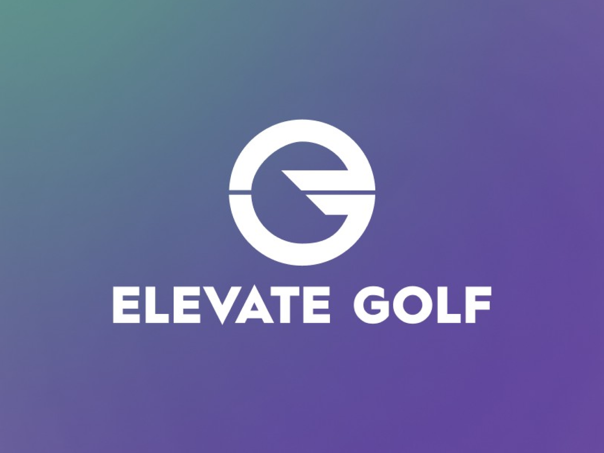
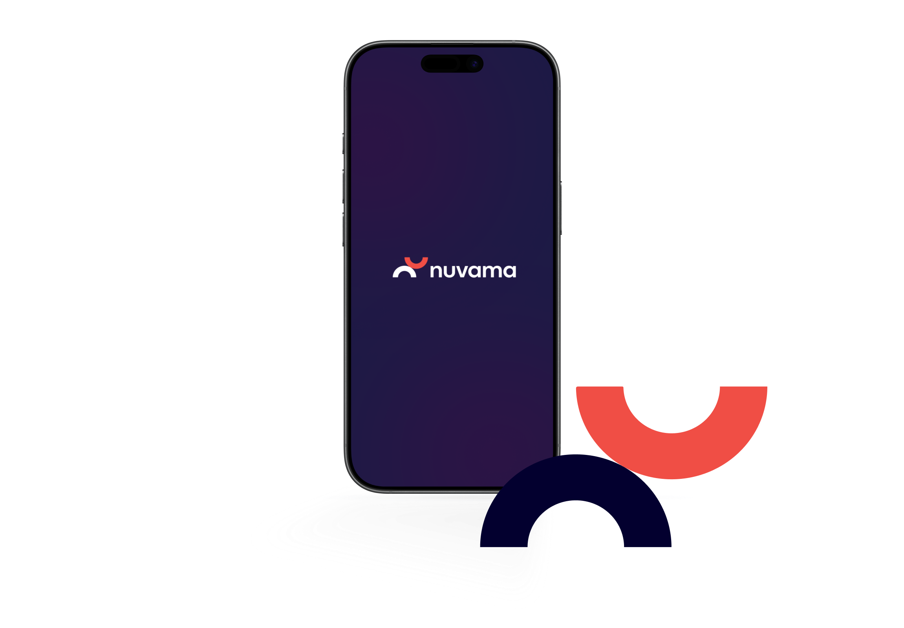

All Projects

Elevate Golf Website
A premium digital experience for a golf brand — combining refined brand identity with a responsive web design built to convert.
View Case StudyKyoho Website Design
End-to-end UX and visual design for a marketplace platform serving both business and consumer audiences at scale.
View Case Study
Nuvama FinSmart
Tablet-first financial product design for a wealth management platform — simplifying complex investment flows for everyday users.
View Case Study
Ola Redesign
A conceptual redesign of the OLA app — reimagining the ride-booking experience with a more intuitive, accessible, and modern interface.
View Case Study
Vybe OTT App
A mood-first OTT experience designed around emotional discovery — helping users find content that truly matches their current vibe.
View Case Study